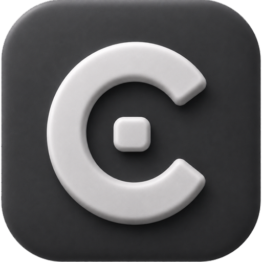

Projekte gemeinsam nutzen
Öffne Projekte aus Coder Performance in Coder light und arbeite innerhalb des Light-Funktionsumfangs weiter. Auch der Weg zurück in die Vollversion gehört zum Workflow.

Videoanalyse App CoderCoder light · Für macOS
Sportvideoanalyse mit Fokus auf das Wesentliche: Videos organisieren, Szenen markieren und Erkenntnisse ans Team weitergeben. In der vertrauten Coder-Welt.
Projekte aus der großen Coder-Version öffnen. Mit maximal 2 Perspektiven. Panels teilen und gemeinsam weiterarbeiten.
YouTube
Hier folgt das YouTube-Video.
Ein Coder-Workflow
Coder light und Coder Performance sprechen dieselbe Projektsprache. Du kannst Projekte der Vollversion in light öffnen und Light-Projekte in Coder Performance weiterverwenden. In light stehen dir maximal zwei Videoperspektiven und der Funktionsumfang der Light-Version zur Verfügung.
Öffne Projekte aus Coder Performance in Coder light und arbeite innerhalb des Light-Funktionsumfangs weiter. Auch der Weg zurück in die Vollversion gehört zum Workflow.
Nutze gemeinsame Code- und Labelpanels: importieren, bearbeiten, exportieren und mit anderen im Team teilen. So bleibt eure Tagging-Struktur konsistent.
Analysiere dein Projekt mit bis zu zwei Videoperspektiven. Die Projektkompatibilität erweitert nicht den Funktionsumfang: Funktionen der Vollversion sind nur dort verfügbar.
Die Werkzeuge für deinen Analysealltag – in einer übersichtlichen macOS-App.


Markiere Tore, Ecken, Spielaufbau und alle weiteren Spielphasen, die du später analysieren möchtest. Oder erstelle ein eigenes Tagging-Panel für Spielerszenen, um die Aktionen deiner Spieler gezielt zu erfassen.
Ergänze deine Szenen mit Labels, um zusätzliche Informationen festzuhalten und später gezielt danach zu filtern. In der Timeline kannst du die Szenen weiterbearbeiten. Projekte und Szenen legst du ohne Mengenlimit an.
Exportiere deine markierten Szenen als XML-Datei im Sportscode-Format. So kannst du sie auch in anderen Analyseprogrammen weiterverwenden, die Sportscode-XML importieren können – zum Beispiel im SAP Video Cockpit.

Erstelle Einzelpräsentationen im Projekt mit Szenen, Text- und Bildfolien, Standbildern und Zeichnungen. Exportiere deine Präsentation als Video oder zeige sie in einem separaten Vollbildmodus auf einem externen Bildschirm oder Beamer – ideal für Präsentationen vor der Mannschaft und für Individualanalysen.
Steuere deine Präsentation bequem mit verschiedenen Bluetooth-Fernbedienungen und Präsentations-Clickern. So kannst du dich frei im Raum bewegen und auf deine Mannschaft oder einzelne Spieler eingehen.

Markiere besondere Spieler- und Mannschaftsszenen aus Spielen und Trainingseinheiten als Highlights – etwa Tore, erfolgreiche Angriffe oder starke Einzelaktionen. Sammle diese Momente über die gesamte Saison hinweg zentral im Highlight-Bereich.
Filtere deine Sammlung gezielt, zum Beispiel nach einem Spieler, und finde seine persönlichen Saison-Highlights schnell wieder. So stellst du passende Szenen für Individualanalysen, Mannschaftsbesprechungen oder einen Saisonrückblick zusammen. Deine Auswahl kannst du als einzelne Clips oder als zusammenhängendes Highlightvideo in MP4 exportieren.
Coder light konzentriert sich auf deinen Analysealltag. Wenn du zusätzliche Funktionen brauchst, kannst du deine Light-Projekte in Coder Performance weiterverwenden. Deine Projekte und Medien liegen lokal auf deinem Mac.
Datenschutz für Coder light